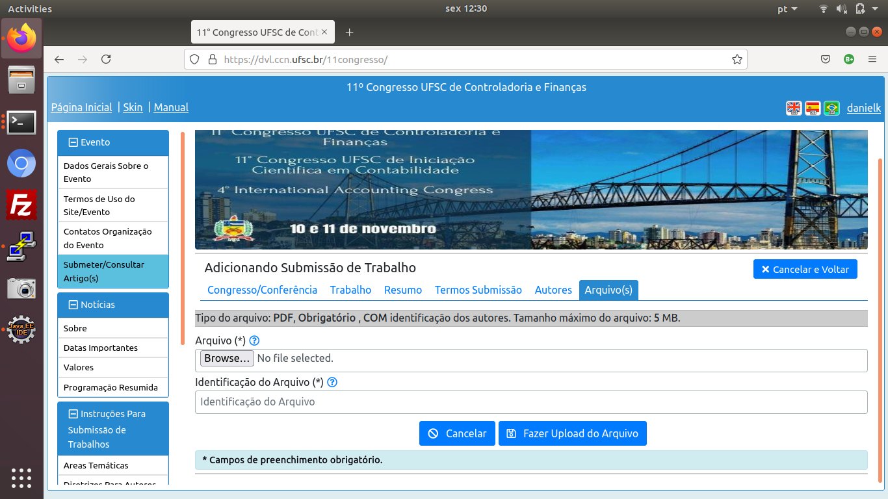

Informação Geral
Este é um manual de uso geral. As imagens, campos de input, botões
e instruções podem conter pequenas diferenças em relação ao que se apresenta
no site do evento, devido à eventuais diferenças de configuração
que são possíveis entre um evento e outro. De maneira geral essas diferenças
não devem afetar o comportamento funcional do site.
Por exemplo: caso o evento tenha apenas registro de "autores" e "avaliadores"
de trabalhos/artigos, estando o registro dos "participantes" delegado
à outro site (endereço web, URL, sistema), então o formulário
de login/recuperação de senha poderá vir com o campo de seleção
"Registrado Como", desabilitado e já preenchido com o valor
respectivo ao único tipo de registro aceito/efetuado para o evento em questão.
Se você tiver dúvidas, ou ainda achar que determinada funcionalidade
esteja apresentando problemas, não hesite em entrar em contato com os
organizadores do respectivo evento, para que estes lhe esclareçam dúvidas
e comuniquem à manutenção do site os eventuais problemas.
3 - Como Registrar-se para ser Autor e/ou Avaliador de Artigos
Existem 3 categorias de registro: Uma para quem deseja somente
submeter artigos, outra para quem deseja somente colaborar sendo
avaliador de artigos, e uma terceira para quem deseja realizar ambas as
coisas.
O site efetua controle para evitar que um avaliador
receba um artigo de autoria própria (ou co-autoria)
para avaliar. A organização
do evento decide decide a melhor forma para
atribuir trabalhos/artigos a serem avaliados para
cada pessoa registrada como "avaliador/autor e avaliador",
com o sistema indicando as respectivas Áreas e SubAreas temáticas
de preferência escolhidas. Contudo não é regra que um avaliador
receba apenas trabalhos/artigos de sua preferência para avaliação
(Caso este seja o caso, cabe ao avaliador comunicar-se expressamente
à organização do evento sobre tal desejo).
Clique nos links abaixo para ver a demonstração dos processos de
cada um dos tipos de registro.
3.1 - Registro Como Autor
Com este registro você estará autorizado a submeter trabalhos/artigos
para o evento.
- Acessar o item de menu "Registro de Autores e Avaliadores".
- Informar nome e email, e demais campos requeridos.
- Para o campo "Registrar Como", escolher o valor "Autor de Trabalhos".
- Informar uma senha, e a confirmação da senha. Será validado tamanho mínimo 10 caracteres, devendo ter ao menos 1 letra minúscula, 1 letra maiúscula, 1 número/digito [0-9], e um caracter especial do conjunto [* + % @ _ . , $ :] (asterisco, sinal de mais, percentual, arroba, underline, ponto, vírgula, cifrão e dois pontos).
- Confirmar que não é um robô.
- Clicar em "Registrar-me como Autor/Avaliador".
- Acessar seu endereço de email para copiar o "Código de Confirmação" recebido, e que será solicitado ao efetuar login pela primeira vez. O evento em questão poderá estar configurado para não solicitar o código de confirmação ao efetuar o registro. Se este for o caso o Email recebido terá uma mensagem um pouco diferente e não conterá o "Código de Confirmação", desta forma o acesso já está automaticamente confirmado após o registro.
3.2 - Registro Como Autor e Avaliador
Com este registro você estará autorizado a submeter trabalhos/artigos
para o evento.
Também indica para a organização do evento que tem interesse em
ser um dos avaliadores de trabalhos/artigos submetidos ao evento.
(Ao final do evento é disponibilizada a funcionalidade
que permite aos avaliadores emitirem seus certificados de avaliador
contando X número de horas por trabalho com avaliação finalizada!).
- Acessar o item de menu "Registro de Autores e Avaliadores".
- Informar nome e email, e demais campos requeridos.
- Para o campo "Registrar Como", escolher o valor "Autor e Avaliador de Trabalhos".
- Informar uma senha, e a confirmação da senha. Será validado tamanho mínimo 10 caracteres, devendo ter ao menos 1 letra minúscula, 1 letra maiúscula, 1 número/digito [0-9], e um caracter especial do conjunto [* + % @ _ . , $ :] (asterisco, sinal de mais, percentual, arroba, underline, ponto, vírgula, cifrão e dois pontos).
- (Opcional) Selecionar uma area temática e a respectiva subarea temática que se tem preferência/expertise para avaliar trabalhos. As areas e subareas são as disponíveis no evento para receber as submissões de trabalhos. Informar estes campos ajuda aos organizadores distribuir melhor os trabalhos para os avaliadores. Isso não implica que obrigatoriamente trabalhos recebidos para avaliar sejam somente desta area e sub area temáticas.
- Confirmar que não é um robô.
- Clicar em "Registrar-me como Autor/Avaliador".
- Acessar seu endereço de email para copiar o "Código de Confirmação" recebido, e que será solicitado ao efetuar login pela primeira vez. O evento em questão poderá estar configurado para não solicitar o código de confirmação ao efetuar o registro. Se este for o caso o Email recebido terá uma mensagem um pouco diferente e não conterá "Código de Confirmação", desta forma o acesso já está automaticamente confirmado após o registro.
3.3 - Registro Como Avaliador
Com este registro você indica para a organização do evento que deseja
ser um dos avaliadores de trabalhos/artigos submetidos ao evento.
(Ao final do evento é disponibilizada a funcionalidade
que permite aos avaliadores emitirem seus certificados de avaliador
contando X número de horas por trabalho com avaliação finalizada!).
- Acessar o item de menu "Registro de Autores e Avaliadores".
- Informar nome e email, e demais campos requeridos.
- Para o campo "Registrar Como", escolher o valor "Avaliador de Trabalhos".
- Informar uma senha, e a confirmação da senha. Será validado tamanho mínimo 10 caracteres, devendo ter ao menos 1 letra minúscula, 1 letra maiúscula, 1 número/digito [0-9], e um caracter especial do conjunto [* + % @ _ . , $ :] (asterisco, sinal de mais, percentual, arroba, underline, ponto, vírgula, cifrão e dois pontos).
- (Opcional) Selecionar uma area temática e a respectiva subarea temática que se tem preferência/expertise para avaliar trabalhos. As areas e subareas são as disponíveis no evento para receber as submissões de trabalhos. Informar estes campos ajuda aos organizadores distribuir melhor os trabalhos para os avaliadores. Isso não implica que obrigatoriamente trabalhos recebidos para avaliar sejam somente desta area e sub area temáticas.
- Confirmar que não é um robô.
- Clicar em "Registrar-me como Autor/Avaliador".
- Acessar seu endereço de email para copiar o "Código de Confirmação" recebido, e que será solicitado ao efetuar login pela primeira vez. O evento em questão poderá estar configurado para não solicitar o código de confirmação ao efetuar o registro. Se este for o caso o Email recebido terá uma mensagem um pouco diferente e não conterá "Código de Confirmação", desta forma o acesso já está automaticamente confirmado após o registro.
4 - Como Efetuar Submissão de Trabalho(s)
Pré Requisitos:
- Ter realizado cadastro como "autor" ou "autor e avaliador" de trabalhos.
- Estar logado no site.
- Acessar o item de menu "Submeter/Consultar Artigo(s)"
Etapas: O processo de submissão dos trabalhos/artigos
está modelado de modo a seguir uma sequência
lógica de etapas, onde é possível avançar e retroceder
cada um dos passos.
1º - Iniciar Submissão
Ao estar logado, está disponível o item de menu
"Submeter/Consultar Artigos",
que ao ser clicado, leva à listagem de trabalhos submetidos.
Acima desta listagem há o botão
"Nova Submissão". Deve-se clicar neste botão
para iniciar a submissão

2º - Selecionar Congresso e Areas Temáticas
Selecionar o congresso/conferência ao qual se
deseja realizar a submissão, também a area temática
e subarea temática. Cada congresso/conferência pode ter areas
e subareas diferente de outro congresso/conferência do mesmo
evento, conforme o que foi definido pela organização.
3º - Dados de Identificação
São solicitados alguns dados de identificação
e/ou controle.
4º - Informar Resumo
Informar o resumo do trabalho. Algumas
informações para ajuda a respeito do tamanho
mínimo e/ou máximo estão acima e abaixo da caixa
de texto. (Conforme e se existirem tamanhos mínimo/máximo definidos).
5º - Aceitar os Termos de Submissão
Marcar a Caixa de Seleção informando
que aceita e concorda com os termos de submissão.
Aqui nesta etapa, ao clicar em "Salvar e Continuar"
os dados informados serão salvos. Neste caso pode-se utilizar o botão
"Cancelar e Voltar" caso se pretenda informar os
dados de autores, anexar arquivos e confirmar a submissão em outro momento.
6º - Informar Autores
O sistema adiciona automaticamente o usuário logado como
o autor 1 do artigo (Autor e Responsável da Submissão).
Se o trabalho tiver outro(s) autor(es) (Co-Autores),
você deve adicioná-los, clicando no botão
"Adicionar Autor".
Será necessário
informar o e-mail deste "co-autor", e é pré-requisito
que o dono deste respectivo email também tenha se registrado
no evento como "Autor de Artigos"
ou "Autor e Avaliador de Artigos".
O sistema realiza esta verificação ao tentar adicionar o(a) co-autor(a).
Esta etapa pode ser pulada e realizada em um momento futuro
(Haverá opções de ações para cada respectivo trabalho da lista).
7º - Anexar (Upload) dos Arquivos
Anexar (fazer Upload) dos Arquivos requeridos.
É apresentada a lista de items requeridos e/ou opcionais.
Para cada item são exibidas as especificações respectivas.
O sistema valida se todos os arquivos requeridos estão
anexados ao clicar em
"Finalizar & Confirmar Submissão".
Será apresentada uma solicitação de confirmação desta ação, caso
os arquivos requeridos estejam validados. (O sistema não valida
o conteúdo dos arquivos, este é de inteira responsabilidade dos
autores!).
Esta etapa pode ser pulada e realizada em um momento futuro,
para isso utilize o botão "Cancelar e Voltar".
(Haverá opções de ações para cada respectivo trabalho da lista).

8º - Lista de Trabalhos Submetidos
Após adicionar uma submissão de trabalho, esta fica visível
na lista. Quando a submissão
ainda não foi confirmada, é possível editar e/ou
excluir a submissão, confirmar a submissão,
além de editar os autores e arquivos (Trocar - Remover/Adicionar).
Se a submissão está confirmada não é mais possível excluir/editar
ou alterar arquivos. Apenas co-autor(es) podem ser adicionados e/ou
removidos. Os demais dados estarão apenas para consulta, podendo ser
acessados pelos botões "Ver / Editar Autores"
e "Ver / Editar Arquivos".
SOMENTE SUBMISSÕES QUE FORAM CONFIRMADAS (AÇÃO "CONFIRMAR SUBMISSÃO")
PODERÃO SER AVALIADAS PELOS AVALIADORES. CASO PULAR ETAPAS OU
NECESSITAR DESFAZER A CONFIRMAÇÃO PARA EFETUAR ALTERAÇÕES, NÃO ESQUEÇA
DE "CONFIRMAR SUBMISSÃO".
5 - Como Efetuar Avaliação de Trabalho(s)
Pré Requisitos:
- Ter realizado cadastro como "avaliador" ou "autor e avaliador" de trabalhos.
- Estar logado no site.
- Acessar o item de menu "Avaliar Trabalho(s)"
Cada linha da tabela exibida corresponde à um trabalho/artigo
a ser avaliado, ou já avaliado (depois de confirmar
a avaliação os dados ainda ficam disponíveis no modo
apenas consulta - sem possibilidade de edição).
Os itens do menu de 5.1 a 5.4 expõem de forma
mais detalhada o processo de avaliação.
5.1 - Acessar e Analisar Informações
O arquivo respectivo ao trabalho estará disponível ao
clicar no botão "Download". O arquivo disponibilizado
é o arquivo sem identificação dos autores.
5.2 - Acessar Formulário Avaliação
O Campo "Comentários / Sugestões / Observações" é um campo
para o avaliador colocar suas notas e impressões de forma livre
a respeito do trabalho, de forma a ajudar os autores efetuarem
correções/ajustes e melhorias no trabalho (suponhamos que o trabalho
não seja aprovado no evento em questão, e os autores usem/possam usar
o mesmo trabalho para submissão em outro evento).
O Campo "Relevância" ao lado do campo "Nota", em cada ponto
de avaliação tem o objetivo de ajudar os autores a calibrar os
ajustes/melhorias do trabalho, servindo de complemento
aos dados do campo "Comentários / Sugestões / Observações".
O valor da média da avaliação é calculado a medida
que se alteram os valores atribuídos a cada um dos pontos
de avaliação.
Conforme o valor calculado da média se altera, também o sistema
calcula o conceito, de forma a ficar ajustado com a parametrização
atribuída ao intervalo de valores de média.
Para gravar os valores atribuídos deve-se clicar no botão "Gravar Avaliação".
Com esta ação volta-se à lista de avaliações. A avaliação
ainda não está finalizada, será necessário uma ação especial de confirmação
ao clicar no botão "Confirmar Avaliação" no respectivo item correspondente
à avaliação em questão (ícone "duplo check").
| Parametrização do Conceito | |
|---|---|
| Intervalo de Média | Conceito Atribuído |
| < 5.49 | REPROVADO |
| <= 7.00 | APROVAR SE A COMPETIÇÃO FOR BAIXA |
| < 8.50 | APROVAR |
| >= 8.50 | APROVAR PRIORITARIAMENTE |
5.3 - Após "Gravar Avaliação", clicar em "Confirmar Avaliação"
A ação "Gravar Avaliação" salva os dados dos valores da avaliação.
Após efetuar esta ação pela primeira vez, pode-se voltar
e editar os valores quantas vezes for necessário (Isso possibilita
realizar a avaliação em partes e/ou dias diferentes por exemplo).
Quando se estiver certo dos valores informados ( e ter efetuado
pelo menos uma vez a ação "Gravar Avaliação"),
deve-se realizar a ação "Confirmar Avaliação" para finalizar
definitivamente a avaliação.
Após efetuar a confirmação da avaliação os dados não estarão
mais habilitados para a edição.
O SISTEMA E OS ORGANIZADORES DO EVENTO IRÃO DESCONSIDERAR
POR COMPLETO TODA E QUALQUER AVALIAÇÃO QUE NÃO SE FIZER A
AÇÃO "CONFIRMAR AVALIAÇÃO".
O SISTEMA TAMBÉM NÃO CONTARÁ OS PONTOS DESTAS AVALIAÇÕES
"NÃO CONFIRMADAS" NO MOMENTO DE GERAR O CERTIFICADO DE
AVALIADOR DE ARTIGOS.
5.4 - Verificar Avaliação Confirmada - Importante
É necessário que a avaliação esteja confirmada para
as notas atribuídas serem
consideradas pelo sistema de avaliação e organizadores
do evento.
Também é importante ressaltar que apenas as avaliações
confirmadas poderão contabilizar pontos para
geração de certificado de avaliador de trabalhos/artigos.
Por exemplo se o avaliador deixou de efetuar a confirmação da avaliação
de um dos trabalhos a ele atribuído,
dentro do tempo hábil, então no momento
de gerar o certificado não serão contabilizadas as horas
respectivas àquela avaliação de trabalho.
1 - Login/Recuperação de Senha
Pré Requisitos:
- Estas funcionalidades dependem de você já ter efetuado o registro no site, conforme o item de menu número 2 (Participar do evento) e/ou um dos sub-itens do item de menu número 3 (Submeter trabalhos para avaliação/Ser avaliador de trabalhos).
A funcionalidade "Recuperação de Senha", está disponível
no mesmo formulário de login, para acessá-la realize click
no link "@ Esqueci a Senha".
Os formulários e mensagens de email usados como demonstração
nos sub-itens deste menu podem variar um pouco de acordo
com as configurações do evento em questão.
1.1 - Formulário de Login
Ao clicar em "Login" no canto superior direito
deve-se escolher entre
"Efetuar Login Como Autor e/ou Avaliador de Submissões"
ou
"Efetuar Login Como Participante".
Para cada uma destas opções é necessário ter se registrado
na respectiva categoria de registro no evento.
Ao realizar login na categoria
"Autor e/ou Avaliador de Submissões" serão
disponibilizadas apenas as funcionalidades relativas às
tarefas de submissão de trabalhos e de avaliação de trabalhos
(conforme permissões de acesso).
Para o acesso (login) utilizando a opção
"Efetuar Login Como Participante",
serão disponibilizados os itens de menu relacionados ao
evento propriamente e que não estão abertamente publicados
para todo e qualquer visitante do site
(Contéudos, Informações, Vídeos, Palestras,
Emissão e Consulta de Boletos, entre outros).
Se alguém pretende ser "Autor e/ou Avaliador" e também
"Participante", deverá realizar dois registros no evento
um para cada respectiva categoria.
Para cada categoria de registro a senha informada fica
restrita ao uso naquela categoria, ou melhor dizendo,
a senha cadastrada para o registro como "Autor e/ou Avaliador"
não será válida ao tentar realizar o login/acesso como
"Participante" (e vice-versa).
Por questão de segurança é recomendável utilizar senhas diferentes
em cada categoria de registro (Caso haja necessidade de fazer registro
em mais de uma categoria), mas nada impede que se utilize a mesma
senha em ambas as categorias de registro.
De toda forma a senha deve ser quanto mais longa o possível
dentro da medida que se consiga memorizar.
Dependendo da configuração do evento
poderá ser solicitado (ou não) um código de confirmação
ao efetuar o login pela primeira vez (Após o registro/inscrição).
De toda forma será enviado um email no estilo abaixo
informando tal código de confirmação e a necessidade de informá-lo
quando solicitado, ou um email apenas informando que o
o registro/inscrição foi efetuado com sucesso.
1.2 - Formulário de Recuperação de Senha
Caso o evento permita registro de "Autor e/ou Avaliador" de trabalhos,
e registro de "Participante" (ou inscrição), será obrigatório
informar a qual destas categorias de registro que se
deseja realizar o login, no campo "Registrado Como".
Do contrário já estará pré-selecionado o único valor possível para
este campo.
Para cada categoria de registro a senha informada fica
restrita ao uso naquela categoria, ou melhor dizendo,
a senha cadastrada para o registro como "Autor e/ou Avaliador"
não será alterada ao realizar a recuperação de senha como
"Participante" (e vice-versa).

Será enviado um email no estilo abaixo
informando a nova senha gerada pelo sistema e um código de
confirmação.
Este código de confirmação será solicitado ao realizar
o primeiro login com a nova senha.
Esta senha gerada é para o registro no evento na
respectiva categoria de registro em que se está tentando
efetuar login (Ver categoria destacada no topo do formulário
de login).
Caso você estravie o email com esta nova senha, ou por algum
motivo o email não seja recebido, você deverá efetuar
novamente o processo de recuperar a senha, pois não há como
saber o conteúdo da senha armazenada, já que é criptografada
de forma irreversível no banco de dados.
2 - Como Registrar-se para Participar do Evento
Com este registro você estará autorizado a ter acesso a funcionalidades
e outros recursos do evento disponibilizados apenas aos participantes
e/ou que necessitam autenticação para acesso.
- Acessar o item de menu "Registro de Participante/Inscrito".
- Informar nome e email, e demais campos requeridos.
- Informar uma senha, e a confirmação da senha. Será validado tamanho mínimo 10 caracteres, devendo ter ao menos 1 letra minúscula, 1 letra maiúscula, 1 número/digito [0-9], e um caracter especial do conjunto [* + % @ _ . , $ :] (asterisco, sinal de mais, percentual, arroba, underline, ponto, vírgula, cifrão e dois pontos).
- Para o campo "Categoria Inscrição", selecionar a respectiva categoria a qual se deseja realizar a inscrição.
- Confirmar que não é um robô.
- Clicar em "Registrar-me como Participante/Inscrito".
- Acessar seu endereço de email para copiar o "Código de Confirmação" recebido, e que será solicitado ao efetuar login pela primeira vez. O evento em questão poderá estar configurado para não solicitar o código de confirmação ao efetuar o registro. Se este for o caso o Email recebido terá uma mensagem um pouco diferente e não conterá o "Código de Confirmação", desta forma o acesso já está automaticamente confirmado após o registro.
-
Caso o evento não necessitar o "Código de Confirmação",
logo após o registro com sucesso, será feito um direcionamento
para o item de menu "Emissão de Ticket/Boleto Pagamento Inscrição"
respectivo a geração do boleto
bancário para pagamento da inscrição (Por motivo de conveniência).
Ver o item "2.1 - Boleto, Pagamento e Informações"
para maiores informações.
Não é obrigatório preencher os campos solicitados para gerar o boleto, caso você esteja isento de pagamento da taxa de inscrição.
2.1 - Boleto, Pagamento e Informações
A falta de pagamento da inscrição não bloqueia o acesso
ao sistema e outros recursos que precisam autenticação.
A geração do boleto pode ser feita a qualquer
momento (até a data limite de pagamento definida
para o evento pela organização), bastando
que se faça login no site do evento "Como Participante/Inscrito",
e acessar o item de menu "Emissão de Ticket/Boleto Pagamento Inscrição".
Novo boleto
Poderá ser emitido novo boleto caso o(s) boleto(s)
já emitido(s) estejam vencidos.
Pagamento via Pix
O boleto gerado pode ser pago pelos meios já
conhecidos ou através do Pix com o QrCode
adicionado a direita do código de barras.
Impressão/Pagamento a qualquer tempo
O boleto gerado fica acessível na listagem de boletos
sendo possível a exibição para pagamento e/ou impressão
enquanto não estiver vencido. Para isso deve se
utilizar o botão "Pagar Boleto".
Moderação de Sala Virtual
Apresentação de Trabalhos
Vídeo Parte 1
- Fazer Login como autor/avaliador, e utilizar extensão
"Dualless" do chrome (ou equilante em outros navegadores)
para dividir a tela (Recomendação - pode-se utilizar outros
meios como ter 2 monitores como exemplo),
podendo observar e gerenciar os acessos do aplicativo
externo (google meet e etc), ao mesmo tempo
que se valida as solicitações de entrada com
as requisições da lista de espera.
Extensão "Dualless":
https://chrome.google.com/webstore/detail/dualless/bgdpkilkheacbboffppjgceiplijhfpd?hl=pt
Gravação de tela parte 1
Vídeo Parte 2
- Continuação da parte 1. Gerenciando a lista de espera
no sistema. Aceitar ou recusar na lista de espera de acordo
com a respectiva ação que foi/irá ser tomada em relação
à entrada da pessoa/participante na sala do aplicativo
externo (google meet e etc)
Gravação de tela parte 2
Vídeo Parte 3
- Participante do evento e/ou pessoa aleatória na
internet solicita participar da sala de apresentação do trabalho
gerando um novo registro na lista de espera.
Gravação de tela parte 3
Vídeo Parte 4
- Continuação da parte 3.
A solicitação da pessoa em participar
da sala de apresentação gerou um novo registro na lista de espera.
A pessoa foi direcionada à sala virtual e fica aguardando ser aceita.
A lista de espera se atualiza automaticamente a cada 60 segundos,
e traz este novo registro gerado na atualização seguinte.
Gravação de tela parte 4
Validação do participante
- Deve ser feita manualmente. Observar se o email informado
ao entrar na lista de espera (sistema) é o mesmo email
que está solicitando a entrada na sala virtual do aplicativo
externo (google meet e etc).
- O sistema informada também se a pessoa que solicitou participação
na sala de apresentação está ou não registrada no evento
como participante. Eventualmente pode-se dar preferência aos
participantes do evento (conforme for a orientação da organização).